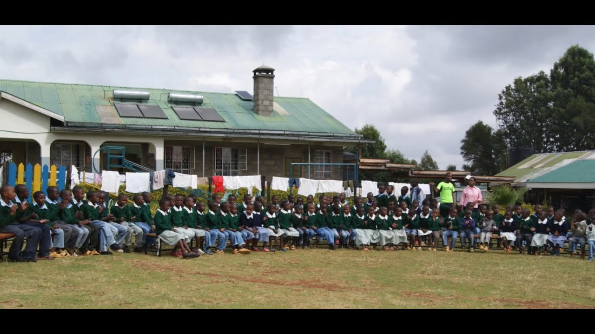

Abandoned babies, street children and children orphaned in the AIDS years have lived here since 1993.
The home is in Ndaragwa, in Nyandarua County. It sits on the equator, 211 kilometres north-west of Nairobi, next to the Catholic parish that started it. Around a hundred children live here now, from babies to school leavers in college and university.
The Little Daughters of St. Joseph have run it since 2000. The parish still holds it as its own work.

Some of it is easier to watch than to read
Rotary filmed a visit in 2015, for the Italian donors who built the dormitories. It shows the compound, the classrooms and the farm where the food is grown.

How the home works
Children are brought here through the local authorities, and through the parish. Most were found living on the street, or lost parents during the years when AIDS emptied whole households in this part of Nyandarua.
The home does not try to keep them for life. Where there is family, it works at getting the child back to that family. Where there is none, adoption is looked at instead.
While they are here, school is not optional. The home pays fees from nursery through to university, and for vocational courses in carpentry, embroidery and masonry where a child is better suited to that.

Lunch outside. Photo: Esharelife Foundation.
Where it came from
- 1993
- Parishioners at Ndaragwa, led by Fr. Gerald Mathenge, start taking in orphans and street children. It registers as a community based organisation.
- 2000
- The parish hands management to the Little Daughters of St. Joseph.
- 2004
- The dormitories open, built with about 450,000 euros raised by Rotary District 2030 in Italy.
- 2014
- Solar panels go on the roofs and the irrigation on the farm is rebuilt.
- 2020
- A minibus is bought so the children can get to the schools in the area.
- Now
- The ten year Rotary agreement has ended. The home runs on its farm, on a handful of Italian and British supporters, and on what it can raise.
What the money is for
Food comes largely from the home's own farm: maize, wheat, vegetables, milk, eggs and rabbit. What the farm cannot cover, it buys. The surplus goes to the market in Ndaragwa and pays the water and electricity bills.
Water is the hard one. In that dry part of Nyandarua the supply reaches the compound about twice a week.
Three needs come up again and again in the home's own paperwork: a new kitchen, school uniforms, and the money to keep children in secondary school once they pass their exams.

Lunch. Photo: Esharelife Foundation.
Donate to the home
You can give by card from anywhere, or by M-Pesa if you are in Kenya. Any amount is useful. The home spends it on food, school fees, uniforms and medicine.
The home is a registered community based organisation under Ndaragwa Catholic Parish. Donations go to the home's account.